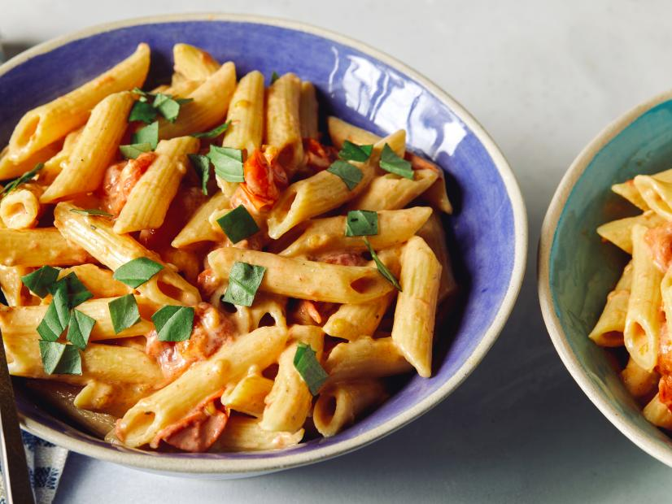

Goat Cheese Pasta

Description
Inspired by the baked feta pasta that took the internet by storm, this recipe is similarly easy but uses creamy goat cheese and comes together in a fraction of the time, thanks to the Instant Pot®! We opted for a short, tubular pasta for this dish to capture a bit of the creamy sauce inside each piece. Top with a sprinkle of fresh basil and you have a bright and flavorful dish you’ll want to make year-round.
Ingredients
- 1 pound penne pasta
- 2 pints (20 ounces) cherry tomatoes
- 2 1/2 cups low-sodium vegetable broth
- 1/4 cup olive oil
- 1 teaspoon dried oregano
- Pinch crushed red pepper flakes
- 4 cloves garlic, thinly sliced
- Kosher salt
- One 8-ounce log goat cheese
- 1/3 cup lightly packed fresh basil leaves, roughly chopped
Directions
- Add the penne, cherry tomatoes, vegetable broth, olive oil, oregano, crushed red pepper flakes, garlic and 2 teaspoons salt to a 6-quart Instant Pot®. Stir to evenly combine; it’s ok if not all of the pasta and tomatoes are fully submerged in the liquid. Place the log of goat cheese on top and in the center of the bowl.
- Follow the manufacturer's guide for locking the lid and preparing to cook. Set to pressure cook on high for 5 minutes. After the pressure-cook cycle is complete, follow the manufacturer's guide for quick release and wait until the quick-release cycle is complete. Being careful of any remaining steam, unlock and remove the lid.
- Stir the pasta together until the tomatoes have all been crushed and the cheese is thoroughly integrated into the sauce. Spoon into serving bowls and top with the basil.